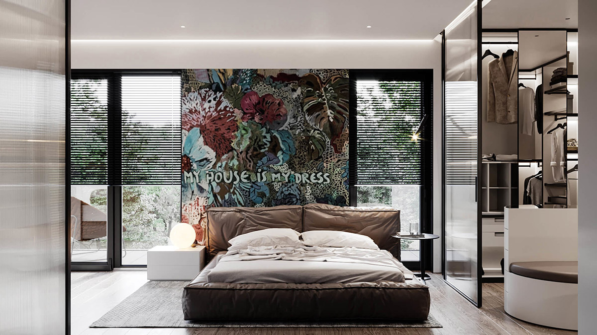

Arty and amazing, each one of these 51 bedroom designs is unique in creative approach. Whether it be a huge piece of modern art, a bespoke mural, or a curious and captivating headboard feature wall, these spaces are one for the art lovers and free thinkers. We also explore the use of colour, in clashing palettes, melting metallics, natural neutrals, muted hues and jewel tones, so there is assuredly something here to satisfy all discerning tastes. Take a wander through our inspirational curation to discover triumphs of creativity that’ll have you grabbing for the paintbrushes, and transforming a bedroom into your own work of art.
Art meets fashion in this modern bedroom with a glass dressing room. “My House Is My Dress” pronounces a huge piece of art behind the bed, which comes alive with jewel colours and a floral theme. The glazed closet displays racks of designer garments–pieces of artwork in themselves.
Bursting with botanicals. Neutral toned artwork dominates this dark room, and the botanical element is brought forth with indoor plants dotted around the space.
Exaggerate lofty room proportions with towering murals. This palm themed painting leads the eye all the way up to scrolled chapiters, classical coving, and a beautiful chandelier.